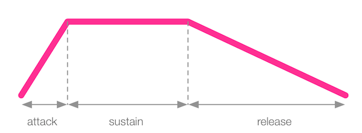

Sonic Pi
1 Synths
Learn It
- Synths is short for Synthesizers.
- Where as the samples you were using in the previous lesson were prerecorded sounds, synths are algorithmically generated sounds.
- This means that synths can be of any pitch, and we can then play around with their parameters as much as we like.
Code It
- Try this:
use_synth :dark_ambience play 60
- So that is middle C, played with the synth
dark_ambience
Learn It
- Synths have lots of parameters we can use.
- For instance,
pan:will control which speaker the sound comes from. -1 is the left speaker and 1 is the right speaker
Code It
- Try this:
use_synth :dark_ambience play 60, pan: -1 sleep 0.5 play 60, pan: 0 sleep 0.5 play 50, pan: 1
Learn It
- There are many other parameters that we can use with the synths.
AttackSustainRelease
- The default duration of a synth is 1 beat (which is 1 second at the moment)
- The
Attackparameter decides how long it takes for the synth to reach it's normal volume. - The
Sustainparameter decides how long the note will last. - The
Releaseparameter decides how long the note will take to reach a zero volume.

Code It
- Try this - it will play the synth for 3 seconds.
use_synth :dark_ambience play 60, sustain: 3
- Now this - it will now play the synth for 6 seconds.
use_synth :dark_ambience play 60, attack: 3, sustain: 3
- This will play the synth for a total of 9 seconds
use_synth :dark_ambience play 60, attack: 3, sustain: 3, release: 3
2 Threads
Learn It
- In the previous lesson you made a bass line.
- What if we want to play a bass line and then have synths playing over the top?
Code It
- Copy and paste this into the Sonic Pi window.
use_synth :fm 16.times do sample :drum_bass_hard, amp: 0.8 sleep 0.25 play :e2, release: 0.2 sample :elec_cymbal, rate: 12, amp: 0.6 sleep 0.25 end
Learn It
- Now let's create a melody to be played over the top of the bass line, using synths.
Code It
- Add this onto the end of your code.
use_synth :tb303 64.times do play chord(:e3, :minor).choose, amp: 0.25 sleep 0.125 end
- Listen to the track you've made.
Learn It
- The melody track you've created doesn't start playing until after the bass track has finished.
- We want the two to play simultaneously.
- That's where
threadscome to the rescue.
Code It
- Modify your code so it looks like this:
in_thread do
use_synth :fm
16.times do
sample :drum_bass_hard, amp: 0.8
sleep 0.25
play :e2, release: 0.2
sample :elec_cymbal, rate: 12, amp: 0.6
sleep 0.25
end
sleep 4
end
use_synth :tb303
64.times do
play chord(:e3, :minor).choose, amp: 0.25
sleep 0.125
end
- Now we can see that the bass track plays along with the melody track.
Badge It
- Using threads, produce a piece of music with bass and melody tracks.